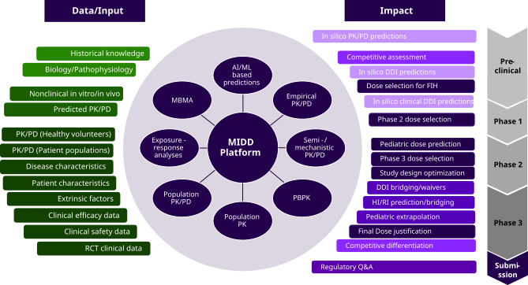
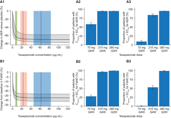

About me
Pharmacometrician
Sanofi
Pharmacometrician
Sanofi
PhD Mathematics @ Hasenauer lab 👋
Technische Universität München
MSc Bioinformatics
Universitat Pompeu Fabra, Barcelona
BSc Biochemistry
Universidad Autónoma de Madrid
PMx Consultant
Certara
Disclaimer
The lecturer declares no conflict of interest.
All content, views, and opinions presented here are personal and do not necessarily reflect the official views, policies, or positions of Sanofi or its affiliates.
You already do pharmacometrics
"Measure what can be measured, and make measurable what cannot be measured."
— Galileo Galilei
In drug development, the system we cannot measure directly is the patient.
Pharmacometrics uses the same tools you use every day — mechanistic ODEs, mixed-effects models, parameter estimation, uncertainty analysis — applied to a specific question:
How does a drug behave inside a human body? What dose is the right one?
Pharmacometrics ("measuring pharmacology") is a discipline that integrates biology, pharmacology, physiology and pathophysiology in mathematical and statistical models to describe and quantify the interactions between drugs and patients.
Models
Pharmacometric models quantify the relationships between drug administered, covariates, exposure and responses (biomarkers, efficacy, safety) as they evolve over time in both individual patients and populations.
PMx Pharmacometrics; QSP Quantitative Systems Pharmacology; PBPK Physiologically Based Pharmacokinetics; PK/PD Population Pharmacokinetics / Pharmacodynamics
Figure: Single IV dose PK profile from a Ph1 trial
dAc/dt = −(CL/V1) · Ac − (Q/V1) · Ac + (Q/V2) · ApdAp/dt = (Q/V1) · Ac − (Q/V2) · Ap
C = Ac / V1
Ac(0) = Dose, Ap(0) = 0Level 2 — Between-subject variability (BSV)
pi = ppop · exp(ηi), ηi ~ 𝒩(0, ωp²)Level 3 — Residual unexplained variability (RUV)
Yij = f(θi, tij) · (1 + εij), εij ~ 𝒩(0, σ²)What goes inside the structural model?
Data: Drug concentration (PK) samples
Absorption, distribution, metabolism, excretion (ADME) modelled as 1–3 ODE compartments. Key parameters: clearance CL, volume V, absorption rate ka.
dAdep/dt = −ka · Adep
dAc/dt = ka · Adep − (CL/V) · Ac
C = Ac / V
Data: efficacy and safety (response) variables
- Efficacy: biomarker, symptom score, or clinical endpoint
- Safety: adverse events
Links concentration to a measurable response. Most PD models are nonlinear in concentration.
dR/dt = kin · (1 + Emax · Cγ / (EC₅₀γ + Cγ)) − kout · R
R(0) = kin / kout
Emax = max stimulation; EC₅₀ = half-max conc.; γ = Hill slope; R₀ = baseline
Model choice depends on the variable type, e.g. indirect response for continuous turnover biomarkers, logistic regression for binary outcomes or time-to-event for survival endpoints.
Capturing and explaining individual variability
BOV (κ²) — between-occasion: within-patient fluctuations across periods (food, compliance, circadian).
RUV (σ²) — residual: assay error, model misspecification.
CLi = CLpop · (WTi/WTmedian)θWT · (1 + θSEX · SEXi) · exp(ηi)From data to decisions
The MIDD platform

MIDD, Model informed drug development; DDI, drug-drug interaction; FIH, first-in-human; HI, hepatic impairment; PBPK, physiology-based pharmacokinetic; MBMA, model-based meta-analysis; RCT, randomized clinical trial; RI, renal impairment
Questions addressed by PMx along the development chain
- PK in human? Any potential covariates?
- Do we match preclinical predictions?
- Do we need to adjust the dose?
- Simulations for following stages
- Differences in PK between healthy subjects and patients?
- Exposure-response relationships for efficacy and safety?
- Are statistically significant covariates (e.g. body weight, DDIs) clinically relevant? Do they warrant dose modifications?
- Dose selection / optimization
- What is the dose in infants / children / adolescents?
- Enroll adolescents in Phase 3?
- Hepatic / renal impairment
- Formulation changes
- Study design optimisation
- Population & formulation bridging
- Study waiver requests
My day-to-day workload
- →Develop and refine population PK/PD models
- →Run model simulations for trial design or dose selection
- →Visualize and communicate modeling results
- →Routine meetings (local and global PMx)
- →Project team meetings and cross-functional discussions
- →Governance and regulatory interactions
- →Write population analysis reports
- →Contribute to regulatory documents and briefings
- →Learning new methods or tools
- →Attending seminars or conferences
Indicative only — in practice the balance shifts substantially depending on project phase, regulatory timelines, and cross-functional demands.
Typical project workflow
Typical project workflow
Step 01 — Project setup
PMx support is requested by the Project representative:
- Discuss current state of project and trials
- Set data cuts and timelines
- Determine the questions to be addressed by PMx
- Construct Population Analysis Plan together
- Prepare a Dataset Creation Plan for dataset creation
Step 02 — Dataset preparation
Request PMx Programming support via the Dataset Creation Plan:
- Indicate the variables of interest
- Extract data from central clinical database and construct a NONMEM dataset
- Data checking, exploration, plotting
Typical project workflow
Step 03 — Analysis pipeline
All steps must be F.A.I.R. and documented to be later reported to health authorities
Typical project workflow
Step 04 — Answer clinical questions
Usually via simulations:
- What dose to choose for the next step?
- Changes in dose regimen?
- Extrapolation to different population?
- Optimal trial design (sampling, patient cohorts…)
Step 05 — Support functions
Provide input for:
- Internal governance meetings
- Updating trial protocols
- Investigator brochure
- Briefing documents and regulatory interactions
Cross-functional interactions
Based on: Ly et al., J. Clin. Pharmacol. 2021;61(7):901–912 · PMID: 33368307
Problem: Dose Selection for Phase 3
Tezepelumab: human monoclonal antibody (IgG2λ) blocking TSLP, an epithelial cytokine upstream of type 2 inflammation in severe asthma.
Phase 2b PATHWAY study tested 3 active arms vs. placebo
| Dose | AERR vs. placebo |
|---|---|
| 70 mg Q4W SC | 62%* |
| 210 mg Q4W SC | 71%* |
| 280 mg Q2W SC | 66%* |
* Statistically significant; AERR: asthma exacerbation rate reduction
- T2 biomarkers reduced across all 3 dose groups vs. placebo
- Well tolerated up to 280 mg Q2W SC; low immunogenicity

Emson et al., Respir. Res. 2020;21:265 · PMID: 33050900
We cannot run three Phase 3 trials. Which dose do we select?
Population PK Model
SC & IV; single & multiple dose
dAc/dt = Ka·F·Dose − (CL/Vc + Q/Vc)·Ac + (Q/Vp)·Ap
dAp/dt = (Q/Vc)·Ac − (Q/Vp)·Ap
IIV: CL, Vc, Ka (log-normal)
RUV: combined (proportional + additive)
| Parameter | Estimate (% RSE) | IIV (CV%) |
|---|---|---|
| CL [L/day] | 0.201 (4.7) | 40.4% |
| Vc [L] | 4.28 (6.0) | 43.7% |
| Q [L/day] | 0.726 (9.2) | — |
| Vp [L] | 2.29 (4.5) | — |
| Ka [1/day] | 0.247 (5.3) | 69.9% ⚠ |
| F [%] | 0.645 (4.2) | — |
Visual Predictive Check

Black lines: observed median; gray shading: 90% CI of model-predicted median. Blue lines: observed 10th/90th percentiles; blue shading: corresponding 90% CIs of model-predicted percentiles.
Covariate search
Body weight, age category, and disease status are statistically significant — but together explain <15% of IIV in CL
Asthma Exacerbation Rate (AER) Model
discrete count events in 4 time bins (0–14, 15–28, 29–40, 41–52 weeks)
log h(t) = LBase + log(Emax) · Cp(t) / (EC50 + Cp(t))
h(t): exacerbation hazard at time t; Cp(t): post-hoc individual PK predictions
- Emax parameterized as the maximal fold-change (ratio)
- Cp(t) driven by 2-cpt popPK model post-hoc estimates
- Model-predicted AER derived from the count model
Covariate search
- ≥3 prior exacerbations on baseline hazard
Visual Predictive Check

Red squares/lines: observed annualized AER; gray shading: 90% CI of model-predicted annualized AER.
FeNO Model
continuous biomarker, 6 timepoints
log FeNO(t) = log(Base) + log(Emax) · Cp(t) / (EC50 + Cp(t)) + ε
Direct response: no delay — onset consistent with first measurement at 4 weeks
Cp(t): post-hoc individual PK predictions
- Emax parameterized as the maximal fold-change (ratio)
- Cp(t) driven by 2-cpt popPK model post-hoc estimates
- IIV on baseline FeNO (CV% = 69.5%) and Emax (CV% = 35.4%)
- Residual variability: additive on log scale
Covariate search
- Baseline eosinophil count on baseline FeNO and Emax
- Baseline periostin on baseline FeNO
Visual Predictive Check

Black lines: observed median; gray shading: 90% CI of model-predicted median. Blue lines: observed 10th/90th percentiles; blue shading: corresponding 90% CIs of model-predicted percentiles.
Identifiability and uncertainty
A non-identifiable parameter can still support a defensible decision
| Parameter | Estimate | 95% CI | %RSE |
|---|---|---|---|
| EC50 AER (µg/mL) | 1.71 | 0.23 – 12.8 | 193% |
| Emax AER (ratio) | 0.292 | 0.196 – 0.435 | 16.5% |
| EC50 FeNO (µg/mL) | 2.50 | 1.27 – 4.93 | 37.9% |
| Emax FeNO (ratio) | 0.722 | 0.678 – 0.769 | 9.9% |
EC50 for AER spans 56-fold. Why?
- Sparse exacerbation data
- 70 mg dose already achieves ~80% of Emax — the data do not anchor the left side of the curve well
Model simulations and recommended dose selection

Solid line and shading: simulated mean % reductions in AER/FeNO with 90% PI. Boxes: model-predicted median and IQR of simulated Cavg,ss for 70 mg Q4W (green), 210 mg Q4W (red), and 280 mg Q2W (blue).
70 mg: suboptimal — only 61% reach EC80 for AER.
280 mg Q2W: marginal gain over 210 mg Q4W; more burdensome regimen.
210 mg Q4W selected for Phase 3 (NAVIGATOR, SOURCE).
FDA approved tezepelumab at exactly this dose in 2021
Lessons learned from this case
01
Treatment arm alone is not sufficient — exposure–response modelling provides the answer
- 62–71% AERR — statistically indistinguishable
- 70 mg: below EC80
- 280 mg: marginal gain with higher patient burden
02
Non-identifiable parameters can support a defensible decision
- EC50 AER: 193% RSE, 56-fold CI
- Simulations for 210 mg Q4W at plateau across all parameter draws
Why GenAI for Pharmacometrics?
PMx workflows are code-intensive — NONMEM, R, nlmixr2, mrgsolve, data pipelines — and tasks are repetitive but highly domain-specific.
The barrier is rarely coding ability. It is translating pharmacometric knowledge into correct, reproducible code — at speed.
You remain the domain expert; the AI is your code accelerator.
Impact on Daily Tasks
| PMx task | Without AI | With AI |
|---|---|---|
| Dataset QC | Manual R script (hours) | R script + report (minutes) |
| Plots & Tables | ggplot2 trial & error | Publication-ready figures |
| Model conversion | Manual, high error risk | Auto-conversion + self-reviewed |
| Report | Word doc from scratch | Auto-generated Quarto/Word |
Examples of GenAI-assisted PMx tasks
Step 01 — Data QC
Step 02 — EDA (PK & PD)
Step 03 — Modeling
- Structured JSON schema removes column ambiguity
- AI knows your data before writing a line of code
"Deterministic" outputs
- Curated prompts specify structure end-to-end
- From analysis code to report format, layout, and narrative sections
Human-in-the-loop
- Break the workflow at meaningful checkpoints — inspect outputs before chaining to the next step
Live demo
Automated Data QC: Input CSV → Word report
Three things to take away
01
Models let us run the trials we cannot
- Too expensive, too slow, or ethically impossible
- Every project follows the same loop: data → model → insight → decision
02
Uncertainty in a parameter ≠ uncertainty in the decision
- EC50 AER unidentifiable — 193% RSE, 56-fold CI
- Yet 210 mg Q4W sits at the plateau across every parameter draw
03
The question drives the model — and the team
- Dose selection, bridging, waiver — same data, different inferential target
- Defining the question precisely is half the analysis
- Priorities shift — proactive communication with clinical and regulatory teams is as important as the modelling